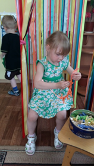
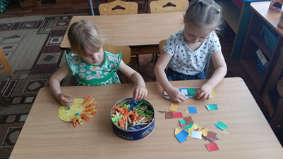
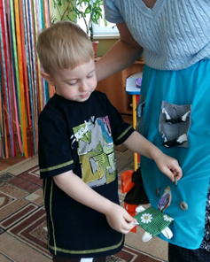
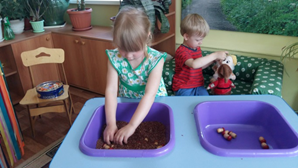
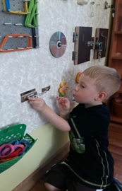
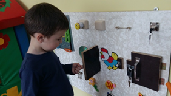

Дошкольный период - это один из важных критических периодов развития, характеризующийся высокими темпами психофизиологического созревания. Ребёнок в жизни сталкивается с многообразием форм, красок и других свойств объектов, в частности игрушек и предметов домашнего обихода. Полноценное сенсомоторное развитие осуществляется только в процессе воспитания. Сенсомоторное развитие дошкольника – это развитие его восприятия и формирование представлений о внешних свойствах предметов: их форме, цвете, величине, положении в пространстве, а также запахе, вкусе и развитие моторной сферы.
Сенсомоторное развитие составляет фундамент общего умственного развития дошкольника.
Задача детского сада – обеспечить наиболее полное развитие воспитанников с учетом возрастных характеристик на этапе завершения дошкольного образования, подготовить их к обучению в школе. Уровень развития сенсомоторики – один из показателей интеллектуальной готовности к школьному обучению. Обычно ребенок, имеющий высокий уровень развития сенсомоторики, умеет логически рассуждать, у него достаточно развиты память и внимание, связная речь.
Игра – универсальный способ воспитания и обучения маленького ребёнка. В своей работе я использую сенсорные игры (игры с песком, глиной, бумагой, крупами, природным и бросовым материалом и т.д.). Эти игры способствуют развитию сенсорной системы: зрения, вкуса, обоняния, слуха, температурной чувствительности. Очень важной частью развития сенсомоторных способностей являются «пальчиковые игры», которые так же широко используются на групповых занятиях и в индивидуальной работе. В кабинете для детей организован уголок сенсорного развития (сухой бассейн, стол воды и песка, мягкое кресло, специальная музыка, сенсорное панно, сенсорная юбка, сухой дождь и т.д.).
Сенсомоторное развитие ребёнка происходит в ходе специальных игр-занятий, в процессе дидактических игр и упражнений, в продуктивных видах.
Для сенсомоторного развития необходимо руководство со стороны взрослого, который включает ребенка в деятельность и формирует действие и восприятие:
выделяет эталоны словом; слово обобщает, т. е. вносит то, что дает
чувственный опыт, и что сам ребенок не может выделить в предмете, явлении.
учит обследовать объект по-разному в зависимости от целей обследования и самих обследуемых качеств.
Основным видом деятельности дошкольников является игра, а сенсорный опыт является источником познания мира. Маленькие дети очень любят действовать с мелкими предметами, которые можно собирать, высыпать, сортировать, они любят щёлкать выключателями, нажимать на кнопочки, дёргать ленточки и т.д. Так почему же не использовать этот интерес для сенсомоторного развития малышей. Совместно с родителями дошкольников мы изготовили игрушки из предметов, которые окружают детей в повседневной жизни. И эти игрушки пользуются огромным успехом среди дошкольников.
Осваивая под руководством взрослых эталонные значения качеств на основе предшествующего собственного сенсорного опыта, ребенок поднимается на новый, более высокий уровень знаний — обобщенных, систематизированных.
Цель - обогащение чувственного опыта детей младшего дошкольного возраста, формирование предпосылок для дальнейшего умственного развития.
Задачи:
· создать условия для обогащения чувственного опыта, необходимого для полноценного восприятия окружающего мира, и накопления сенсорного опыта детей в ходе предметно-игровой деятельности через игры с дидактическим материалом.
· формировать умения ориентироваться в различных свойствах предметов (цвете, величине, форме, количестве, положении в пространстве и пр.).
· воспитывать первичные волевые черты характера в процессе овладения целенаправленными действиями с предметами (умение не отвлекаться от поставленной задачи, доводить ее до завершения, стремиться к получению положительного результата и т.д.).
Игра «Сухой дождь»
Цель: развитие тактильных ощущений, мелкой моторики, закрепление знаний о цвете, учить находить местоположение прищепки по цвету.
Материал: кольцо, на который прикреплены разноцветные атласные ленты, прищепки.
Ход игры: рассмотреть и потрогать с детьми ленточки. Сказать, что это дождь.
Дождик, дождик веселей,
Капай, капай не жалей,
Брызни в поле пуще ~
Станет травка гуще.
Только нас не замочи,
Зря в окошко не стучи!
Вспомнить в какое время года идут дожди. Например: «Зеленый дождь идет весной, он веселый и радостный, потому что распускаются почки на деревьях, появляется травка и т.д. Варианты ассоциаций: красный-лето, желтый – золотая осень, синий – холодный дождь поздней осени. Предложить найти прищепки соответствующего цвета и прикрепить их на ленту.
Дидактическое упражнение «Разноцветные прищепки»
Описание: понадобятся прищепки 4-ёх цветов: красные, жёлтые, зелёные и синие. Их цвет должен соответствовать цвету атласных лент.
Задачи: учить устанавливать сходство предметов по цвету, правильно называть цвет;
формировать умение сравнивать; развивать зрительное восприятие, мелкую моторику рук.
Педагог приглашает детей поиграть с прищепками, сначала рассматривают их, называют цвет. На начальном этапе педагог учит детей нажимать пальчиками на прищепку, чтобы она открывалась. Затем можно предложить прикрепить прищепки на разноцветные ленты (силуэты), выбрав прищепки по цвету.
Можно разнообразить задание:
• прикрепить прищепки правой рукой, а снять левой (при этом следить, чтобы ребёнок снова делал нажим на прищепку и открывал её);
• чередовать прищепки по цвету;
• на короткую (на длинную) ленту прикрепить, например, прищепки красного цвета (поинтересоваться, какого цвета выбрана лента) и т.д.
«Сенсорная юбка»
Цель: обогащение сенсорных представлений посредством дидактических упражнений
Задачи:
• формировать умение сравнивать, устанавливать сходство предметов, деталей по их признакам: цвету, форме, размеру;
• развивать мелкую моторику, внимание, зрительное восприятие;
• воспитывать коммуникативные навыки: тёплые и доверительные отношения со взрослым и сверстниками.
«Сухой пальчиковый бассейн»
Цель игры: развитие тонкой (мелкой) моторики рук детей, стимулирование речевых зон коры головного мозга детей; эмоционально-личностное и познавательное развитие детей.
Задачи игры:
- развитие тактильной чувствительности и сенсорных ощущений;
- формирование навыка подражания, усвоения действий по показу и образцу;
- развитие функциональных возможностей кистей и пальцев рук: соотносящих движений, хватания, дифференцированных движений пальцев рук, укрепление мышц пальцев и кистей рук,
- развитие познавательной функции речи, расширение пассивного и активного словаря, уточнение и обобщение значений слов, введение их в активный словарь, развитие эмоционального общения.
«Сенсорное панно»
Цель: развитие мелких и точных движений рук и пальчиков ребёнка, формирование координации «рука-глаз», получение и закрепление представлений о свойствах предметов;
формирование навыка идентификации по сенсорному признаку, развитие ловкости ручек и пальчиков ребёнка.
Представленные, а также и другие игры и упражнения я использую для групповых и индивидуальных занятий с детьми. На этих игровых занятиях малыши получат много положительных эмоций от игровой деятельности, научатся работать в группе, научатся общаться со сверстниками и взрослыми, получат большой багаж знаний, умений, навыков, у них сформируется «привычка думать», делать выбор, принимать решения.